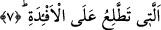
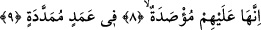

ateşlerden olmadığını vurgulamak içindir.
Bir hadis-i şerifte şöyle buyurulmaktadır: “Cehennem bin senede tutuşturuldu ve
kıpkırmızı oldu, bin sene daha yakıldı, beyazlaştı, bin sene daha yakıldı siyahlaştı,
şimdi o simsiyah ve kapkaradır.” [220]
Hz. Ali der ki: “Altında Cehennem tutuşturulmuşken yerin üstünde Allah’a isyân eden
kimseye hayret ederim!”
7. (Yandıkça) tırmanıp kalplerin ta üstüne çıkan (ateşidir.)
Yâni kalplerin ortasına yükselir ve onları bürüyüp sarar. Âyetteki “el-ef ’ide”
kelimesinin müfredi “fuâd” kalbin ortası demektir ve rûha bitişiktir. Buna göre âyetin
mânâsı şöyledir: Bu ateş kemikleri kırıp parçalar, etleri yer, şehvet ehlinin içine girer,
slarına ulaşır ve kalplerini istîlâ eder, kaplar. Ancak kalplerini tümüyle yakmaz. Çünkü
yakarsa o kalbi taşıyan kimse ölür. Sonra Allah onların kemiklerini ve etlerini bir kez
daha eski hâline getirir.
Bu âyette özellikle “kalb”in zikredilmesi, vücudda en latif ve kendisine gelecek en
ufak eziyetten en fazla acı duyan uzuv olması veya yanlış inançları ve kötü niyetleri
barındırması ve kötü amellerin menşei olması sebebiyledir.
Ateşin, cesedin hazînesi ve emânet mahalli mesâbesinde olan kalbe işlemesi, onun
cesedin tümüne daha kolay işleyeceğini gösterir.
Keşfü’l-esrâr sâhibi buyurmuştur ki; kalbe yol bulan bir ateş farklı ateştir. Hüseyin
Mansûr (Hallâc) buyurdu ki: “Allah’ın tutuşturulmuş ateşi yetmiş sene içimde yandı.
Beni tamamen yakmışken ansızın “ene’l-hak” çakmağından bir kıvılcım dışarı sıçradı ve
bu yanmış Mansur’un üstüne düştü. Şimdi bizim yanışımız hakkında bilgi verebilmek
için böyle yanmış birisi gerekir.
Ey mum, gel de seninle inleyip ağlayalım,
Zîrâ yanmış bir gönlün hâlini yine bir yanmış bilir.
8-9. Onlar (bu ateşin içinde) uzatılmış sütunlara bağlanmışlar ve o vaziyette o
(ateş) üzerlerine kapatılmıştır.
Ateşin kapıları onların üzerlerine kapatılacaktır. Bu ifâdenin kullanılması, onların o
ateşten çıkma ümidlerini tamamen kırmak, ümitsizliklerini pekiştirmek ve ebedî o ateşe
hapsedileceklerine kesinkes inanmalarını sağlamak içindir.